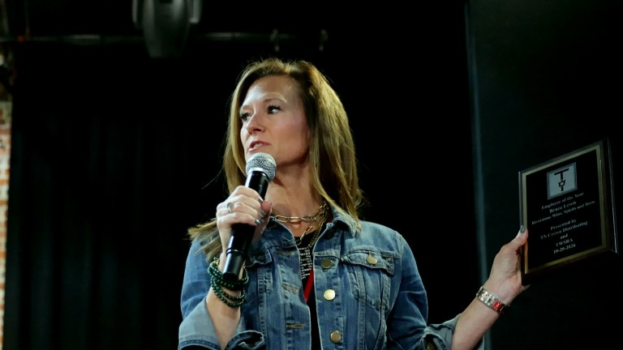
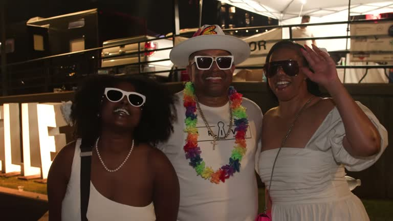
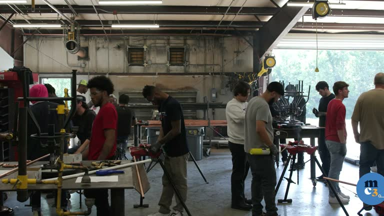
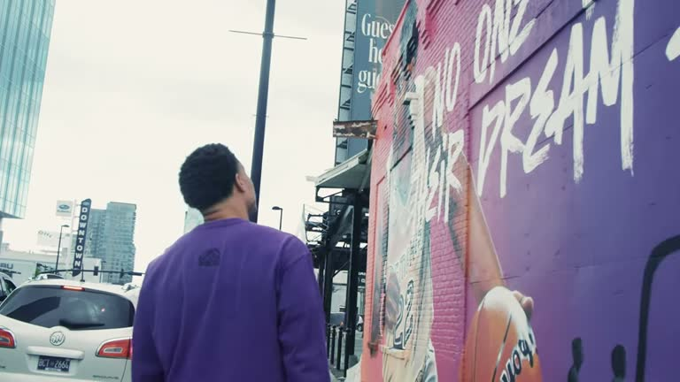

Convention videographyin Nashville. Recap films that sell next year.
A good recap film does three jobs: it thanks the people who came, it shows sponsors what they bought, and it sells next year's event. Leo Operations films conventions, conferences and corporate events in Nashville in 4K and cuts them for every place they will be watched.
What we deliver
A 60 to 90 second highlight reel cut to music, longer recap films, full session recordings for your on-demand library, short sponsor and exhibitor videos, speaker soundbites, and vertical clips sized for Instagram, TikTok and LinkedIn. We can also livestream keynotes and general sessions.
How we shoot an event
We start with your run of show and mark the moments that sell: the opening walk-in, the keynote applause line, the expo floor at its busiest, the award, the reception. We shoot high frame rate for slow motion, capture clean audio from the house sound board, and pull establishing wides early, because the open of a recap film has to show the size of the room.
For the 2026 Tennessee Wine & Spirits Retailers Association trade show, that meant elevated wides from the stage, the exhibitor booths, the awards ceremony and the step-and-repeat, cut into a reel built to sell sponsorships and booths for the next show.
Built for Music City Center and downtown
We know how the big rooms run. At Music City Center, power, rigging and internet go through the venue's exclusive providers, so camera risers, power drops and stream bandwidth get ordered through your show management before load-in. We handle that paperwork with you.
One crew for photo, video and design
Add photography, a headshot lounge, or the design of your programs and signage, and it is all produced by the same team with one look.
Everythingyou need.
See itin motion.








Questions, answered.
How much does it cost to hire a videographer for an event?
Event video is priced by crew size, hours on site and editing. A single camera for a half day and a multi-camera crew with a same-day edit are very different jobs. Send your agenda and we will quote it in writing within one business day.
What is an event videographer?
An event videographer films live events such as conventions, conferences, galas and award shows, and edits the footage into recap films, session recordings and social clips.
How long does a conference highlight video take?
We can deliver a same-day or next-day social cut during the event, with the full highlight reel after. We set the turnaround in writing when you book.
Can you record every session?
Yes. We staff one camera operator per room that needs recording and capture audio from the house sound system.
Do you livestream events?
Yes. We stream keynotes and general sessions to YouTube, Vimeo, Zoom or your event platform, with a dedicated hardwired line ordered through the venue.
How do we book?
Email us or call (773) 573-2135 with your dates, venue and agenda.
Let’s make itunforgettable.
Tell us the date, the place and what you need. We will tell you how we would cover it.
Email Leo Operations →